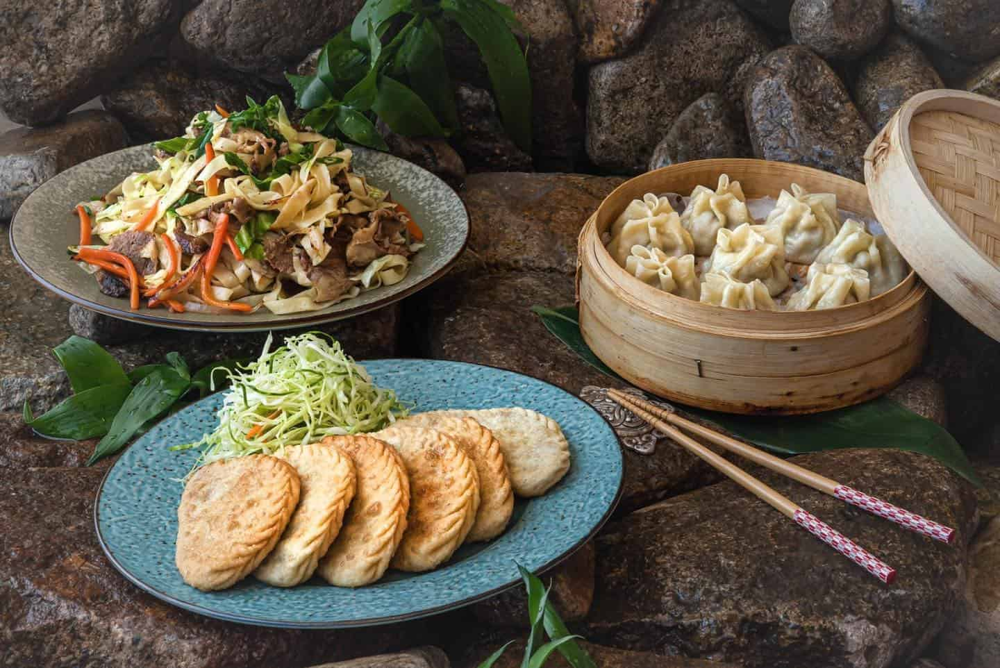

Fresh ingredients
We prepare vegetables daily and build meals around lighter sauces, herbs and quality proteins.
Fresh • Fast • Asian Inspired
GreenBite is a small Asian food business serving rice bowls, hand-folded dumplings, noodle dishes and refreshing drinks with fresh ingredients, balanced flavours and quick service.

We prepare vegetables daily and build meals around lighter sauces, herbs and quality proteins.
Perfect for students, office workers and local residents who want quality food without long waiting times.
Our menu includes tofu bowls, mushroom dumplings and plant-based dishes for different dietary preferences.
External inspiration video to support the restaurant theme and improve multimedia variety.
GreenBite is designed as a small neighbourhood restaurant website prototype. Customers can browse dishes, check the location and contact the team for bookings or catering.